For two squares, there are solutions for m=n–1 by alternating columns of squares of different sizes, like this one.
| 4, 5
|
There are also these solutions with m=n–2.
1, 3
| 3, 5 (PH) 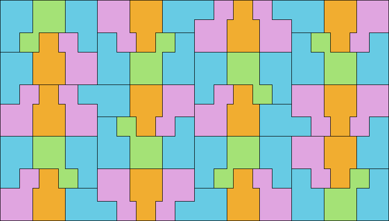 |
Then Torsten Ueckerdt found a similar infinite family for m=n–2, explained by this picture:
| 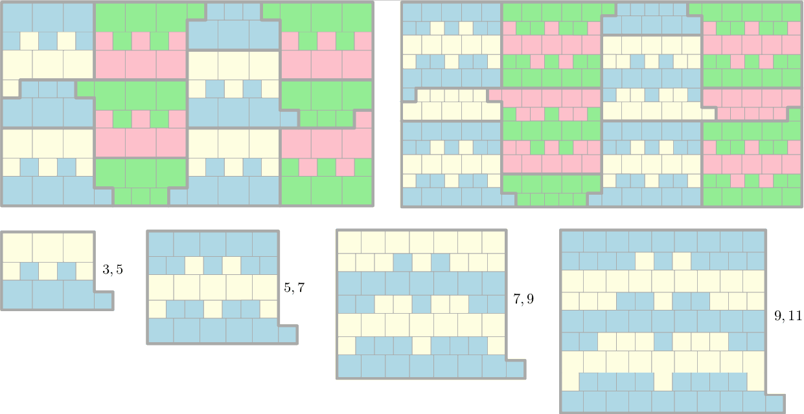 |
Torsten Ueckerdt also proved that there are no other solutions for m<n/2. This means the smallest open case is n=7 and m=4.
For three squares, there are more solutions:
| 1, 2, 3 (GS) 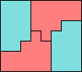 | 1, 2, 4 (GS) 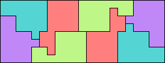 | 1, 3, 4 (GS) 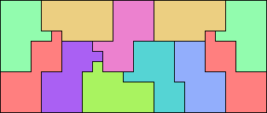 | 2, 3, 4 (GS) 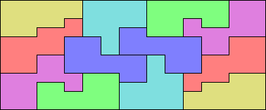 | 1, 2, 5 (GS)
| 1, 3, 5 (GS) 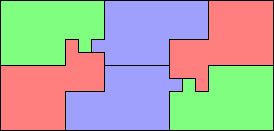 |
| 1, 4, 5 (GS) 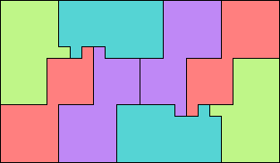 | 2, 3, 5 ? | 2, 4, 5 (GS) 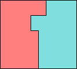 | 3, 4, 5 (PH) 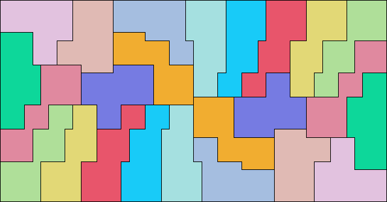 | 1, 2, 6 ? | 1, 3, 6 ? | 1, 4, 6 ? | 1, 5, 6 ? |
| 2, 3, 6 (PH) 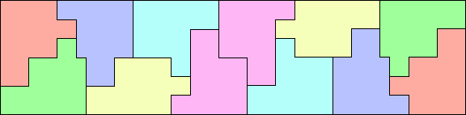 | 2, 5, 6 (GS) 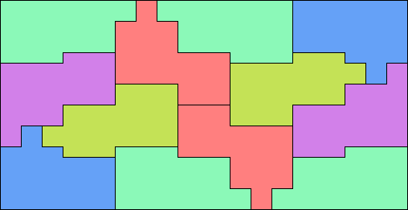 | 3, 4, 6 (PH) 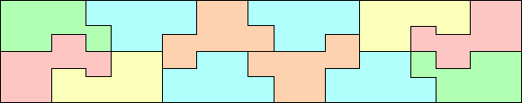 |
| 3, 5, 6 (GS) 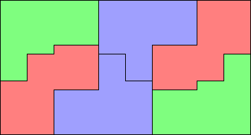 | 4, 5, 6 ? | 2, 5, 7 (PH) 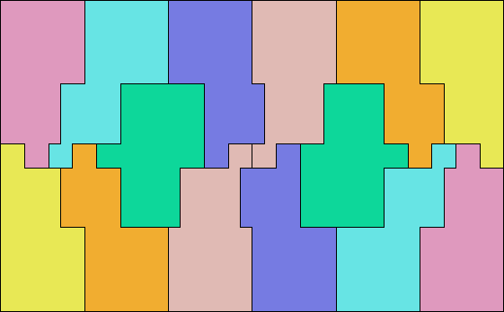 | 6, 9, 13 (PH) 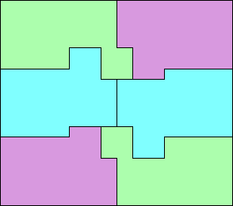 |
Patrick Hamlyn found that squares of sizes 1, 4, and 7 can tile a half strip:
George Sicherman also extended the problem to tans:
If you can extend any of these results, please e-mail me. Click here to go back to Math Magic. Last updated 5/29/20.